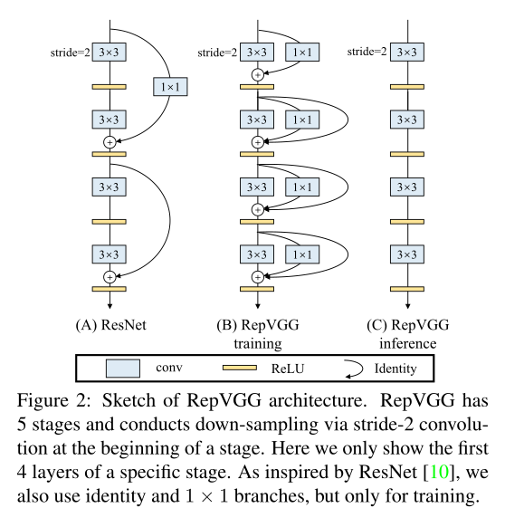

Fusion Conv-BN et RepVGG
Etude des poids des Conv \(3 \times 3\) et des BatchNorm
Regardons comment s'articulent les poids dans les couches de convolutions et de batchnormalisation.
Initialisation d'un modèle
Etude de la couche convolutive
Les poids forment une liste de deux élements : les poids des noyaux de convolutions et les biais. La méthode d'initalisation utilisée ici est he_uniform, développée dans l'article Delving Deep into Rectifiers: Surpassing Human-Level Performance on ImageNet Classification
Les poids dans une couche convolutive sont une liste de deux éléments :
- weights[0] correspond aux poids des noyaux de convolution,
- weights[1] correspond aux biais.
Les axes du tenseur de poids suivent les dimensions suivantes :
- kernel_size1 : hauteur du kernel,
- kernel_size2 : largeur du kernel,
- channels_in : nombre des feature maps en entrée,
- channels_out : nombres de features maps (filters) en sortie.
channels_out est définie dans la couche convolutive via le paramètres filters, alors que la valeur channels_in est elle directement déterminée par le tenseur en entrée. C'est une différence de TensorFlow par rapport à Pytorch où channels_in et channels_out sont tous les deux des paramètres des couches convolutives.
Ainsi, si l'on veut voir les poids du noyau de convolution par rapport au canal \(0\) en la feature map de sortie \(5\), on les obtient en regardant :
Par défaut, les biais des couches de convolutions sont tous initialisés à zéro.
Etude de la batchnorm
Dans une couche de Batchnormalization, on a 4 types de poids.
- Les deux paramètres de scaling \(\gamma\) et de biais \(\beta\).
- Les deux paramètres correspondant à la moyenne \(\mu\) et la variance \(\sigma\).
Tous ces paramètres ne sont pas entraînables, comme on peut le voir dans la liste suivante.
Les \(4\) paramètres sont tous des vecteurs de dimension \(16\), ce qui correspond au nombre de feature maps en sortie de la couche convolutive.
Fusion d'une Convolution et d'une batchnorm
La fusion d'une couche de convolution avec une couche de batchnorm ressort les poids et biais d'une nouvelle couche de convolution avec les noyaux de convolutions de même dimension.
Etant donné le tenseur \(W\) de poids des noyaux de convolution d'une couche convolutive et le tenseur de \(4\) paramètres \(B=(\gamma, \beta, \mu, \sigma)\) d'une couche de batchnormalization, on obtient les nouveaux poids et poids de la nouvelle couche convolutive via les formules suivantes.
On remarque ici que le biais de la nouvelle couche de convolution ne dépend que des paramètres de la couche de batchnorm. Ce qui est cohérent avec la pratique de ne jamais mettre de biais dans une couche de convolution lorsqu'elle est suivie par une couche de batchnorm.
Remarque : le \(\epsilon\) présent ici est pour s'assurer que l'on ne divise jamais pas zéro, dans la pratique il est fixé à \(0,001\).
Ce qui nous donne, dans la pratique la fonction suivante.
Détaillons la fonction ci dessus.
Nouveau tenseur de poids
Discutons premièrement de la formulation du nouveau tenseur de poids, et voyons pourquoi on modifie la forme de vecteurs \(\gamma\) et \(\sigma\).
\(W_{:,:,:,j}\) correspond dans la formule au noyau de convolution complet de la \(j\)-ième feature map de sortie.
On a \(16\) noyaux de convolution, chacun de dimensions \((3,3,3)\). Par exemple, pour \(j=1\).
Les vecteur \(\gamma\) et \(\sigma\) étant des vecteurs de dimension \(16\), on va les "transformer en tenseur" de dimensions \((1,1,1,16)\) pour bien faire correspondre le produit suivant chaque axe.
Au final, la formule
résume tout cela, tous les tenseurs ayant le nombre d'axes, les opérations sont vectorisées et se font axe par axe.
Nouveau tenseur de biais
Le opérations de reshape n'ont pas ajouter de nouveaux scalaires, juste des axes, le calcul du biais se fait alors élément par élément pour tout \(j\).
Vérification via les développements limités
Créons un tenseur de poids \(W\) repéresentatif du noyau d'une convolution et un tenseur de poids \(B=(\gamma, \beta, \mu, \sigma)\) représentatif des coefficients d'une batchnormalization.
Pour vérifier si tout marche bien, fixons volontairement le tenseur poids comme un tenseur de dimensions \((3,3,4,5)\), la dimension du noyau est toujours fixé à \((3,3)\) dans RepVGG, seules les dimensions channels_in et channels_out peuvent changer.
Tous les coefficients du tenseur de poids seront fixés à \(1\).
La dimension channels_out ayant été fixée à \(5\), les vecteurs de la batchnormalization seront tous des vecteurs de dimension \(5\). Fixons les coefficients suivants.
Par définition, le nouveau tenseur de poids \(\widehat{W}\) de la convolution résultant de la fusion de l'ancienne convolution et de la batchnorm est donné par formule suivante.
De façon générale, pour \(\gamma_{j}, \sigma_{j}\), on a le développement limité suivant.
Dans notre cas, \(\forall j, \gamma_{j} = 1, \sigma_{j} = 4\) d'où
Ce qui correspond bien à l'approximation obtenue par développement limité. On peut par exemple vérifier si \(\widehat{W}\) est approximativement égal à conv à \(10^{-3}\) avec la commande np.isclose.
Si np.mean(...) \(< 1\) alors le calcul est faux.
Pour le biais, on a la formule suivante.
dans notre cas, on a :
- \(\beta_{j} = 2\),
- \(\gamma_{j} = 1\),
- \(\mu_{j} = 1\),
- \(\sigma_{j} = 4\).
RepVGG


Les couches convolutives dans RepVGG n'ayant que des noyaux \(3\times3\) ou \(1\times1\), on ne se préoccupe que de cela dans la suite.
Fusion d'une Conv \(3\times3\) avec une batchnorm puis transfert de poids
Créons un modèle simple : une couche convolutive suivi d'une couche de batchnormalisation, pour simplifier on ne condière aucune couche d'activation (qui de toute façon ne rentre pas en jeu). Nous allons :
- Fusionner les deux couches pour créer un nouveau tenseur (poids, biais)
- Transférer ce nouveau tensor dans un modèle plus simple
model_after_fusion.
Remarque : la convolution dans model_after_fusion utilise elle bien un biais (use_bias = True).
Vérifions que la mise en place des nouveaux poids s'est bien passée, ie que l'opération set_weights() n'a rien ajouté de supplémtentaire. Si tout se passe bien, np.mean ne devrait renvoyer que des 1.0.
Donc tout s'est bien passé. Reste maintenant à généraliser cette transformation.
L'idée de RepVGG est d'utiliser une architecture à la ResNet pour l'entraînement, avec des skips connections, puis lors du déploiement du modèle de reparamétrer les skips connections via des fusions Conv-BN afin de plus avoir qu'une architecture linéaire à la VGG, beaucoup plus rapide en inférence qu'une architecture à la ResNet.
En plus de fusionner des \(\mathrm{Conv} 3 \times 3\) avec des \(\mathrm{BN}\), il est aussi nécessaire de savoir faire les opérations suivantes.
- Convertir une \(\mathrm{Conv} 1 \times 1\) en \(\mathrm{Conv} 3 \times 3\) puis la fusionner avec la \(\mathrm{BN}\) correspondante.
- Convertir une \(\mathrm{id}\) en \(\mathrm{Conv} 3 \times 3\) puis la fusionner avec la \(\mathrm{BN}\) correspondante.
Conversion d'une Conv \(1 \times 1\) en \(3 \times 3\) puis fusion avec la batchnorm.
Pour convertir une conv 1x1 en conv 3x3 les nombres de canaux en entrée et en sortie importe peu, ce qu'il faut c'est modifier la dimension des noyaux de convolutions pour passer d'une dimension 1x1 à 3x3, et pour cela on utilise un padding.
La première chose à faire, c'est de transformer les noyaux de convolution \(1\times1\) en des noyaux de convolution \(3\times3\). Pour faire cela, on utilise la notion de "padding", déjà utilisée dans le cas des convolutions.
On a deux fonctions possibles pour faire ça. On peut utiliser soit la fonction de tensorflow.
Soit la fonction de numpy.
Dans les deux cas, on a un paramètre donnant la taille du padding : [[1,1], [1, 1], [0,0], [0,0]], c'est une liste de longueur le nombre d'axes du tenseur que l'on souhaite modifier, chaque élément de la liste nous dit de combien on doit agrandir au début et à la fin.
[[1,1], [1, 1], [0,0], [0,0]] = [[pad_avant_axe1, pad_arrière_axe1], [pad_avant_axe2, pad_arrière_axe2], [pad_avant_axe3, pad_arrière_axe3], [pad_avant_axe4, pad_arrière_axe4]]
Le dernier paramètre nous dit quoi rajouter aux endroits où l'on a agrandi, ici des constantes : la valeur \(0\).
Les deux fonctions donnent le même résultat.
Comme la fonction set_weights() demande d'utiliser des np.array, on va utiliser la fonction de numpy.
Vérification
On a transformé tous les noyaux de convolutions \(1\times1\) en noyaux \(3\times3\), chacun des padded_weights_conv1[:,:,i,j] pour \(0 \leq i \leq 2\) et \(0 \leq j \leq 15\) doit être une matrice \(3\times3\) où tous les éléments sont nuls sauf possiblement celui du milieu.
Comme précédemment, on vérifie via les développements limités que ça fonctionne.
Conversion d'une \(\mathrm{id}\) en \(\mathrm{Conv} 3 \times 3\) puis fusion avec la batchnorm.
Les branches id ne sont utilisées dans l'architecture de RepVGG que lorsque la conditions channels_in = channels_out est vérifiée, c'est à dire à l'intérieur de chaque stage entre 2 blocs convolutifs avec un stride de 2.
An identity mapping can be viewed as a \(1\times1\) conv with an identity matrix as the kernel.